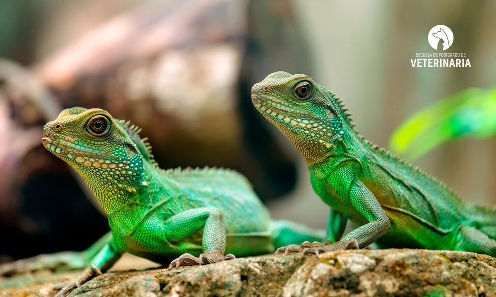

Reptiles domesticos!
Muchas veces entendemos como animales de compa a a perros, gatos, h mster, conejos pero muchas familias, en lugar de tener como miembro uno de los animales anteriormente nombrados, tienen como mascota un reptil. Y es que, aunque sean animales que necesitan unos determinados y espec ficos cuidados, pueden ser el mejor animal de compa a y dar bonitos momentos.
Cu les son los tipos de reptiles dom sticos?
Las tortugas
Debemos diferenciar entre terrestres y acu ticas. En general son animales tranquilos, con f ciles cuidados e ideales para los ni os. Necesitan un acuario o terrario amplio seg n vayan creciendo, ya que no podemos olvidar que el tama o con el que suelen adoptarse dista mucho del de un adulto.
El gecko
Es un tipo de reptil que requiere de un terrario, pero no tan grande como el que necesita una iguana. El gecko es un animal muy peculiar debido a que en los dedos tiene miles de pelos de microsc picos que le permite permanecer pegado en cualquier superficie, adem s de que existe una gran variedad de geckos con llamativos y distintos colores. Su dieta se basa en insectos vivos.

El camale n
Tiene la capacidad de cambiar el color de su piel para camuflarse, y ver c mo realiza este cambio es muy curioso y fascinante. Como cualquier reptil, requiere de un h bitat espec fico dentro de casa y una serie de cuidados espec ficos para poder darle la mejor salud. Su dieta se basa en insectos vivos.
La iguana
Pueden llegar a ser muy grandes, algunas han llegado a los 2 metros de largo, son muy divertidas e inofensivas, pero necesitan mucho espacio.
Serpientes
Los perros necesitan ejercicios para quemar energ a y mantenerse saludables. Es importante que tu perro pueda salir de casa al menos dos veces al d a y realice conductas propias de su especie animal, como explorar el espacio, seguir rastros, olfativos, correr y socializar con otros perros. De este modo, no solo fortaleces la relaci n con tu mascota, sino que lo mantienes estimulado y activo.

Qu cuidados necesita un reptil?
Cada uno de los reptiles necesitar cubrir sus necesidades dependiendo de la especie, pero un aspecto que todos comparten es poder disponer de un amplio terrario donde pueda descansar y poder alimentarse. Otro aspecto importante es conocer qu temperatura necesita tener el animal dentro del terrario, ya que los reptiles son ectodermos y no son capaces de regular internamente su temperatura, dependen de la temperatura exterior.
Tambi n es importante que dispongan de oscuridad durante un periodo de tiempo adecuado al d a o incluso un peque o estanque con agua. Y sobre todo, cuidar su alimentaci n, donde el veterinario especialista en animales ex ticos podr recomendarte la mejor dieta adaptada a las necesidades de la especie del reptil.
Consejos antes de adoptar un reptil
Aseg rate de que cumples con los siguientes consejos antes de adoptar a un reptil para que el proceso y la convivencia sean una experiencia de 10:
- Conoce cu l es su esperanza de vida.
- No adoptes especies que est n protegidas.
- No adoptes especies ilegales.
- No adoptes un animal o reptil salvaje.
- Confirma que haya crecido junto a criadores responsables y legales.
- Confirma con un veterinario que goza de buena salud.
- Conoce a fondo los cuidados que va a necesitar durante su vida y el h bitat donde va a descansar durante el d a.